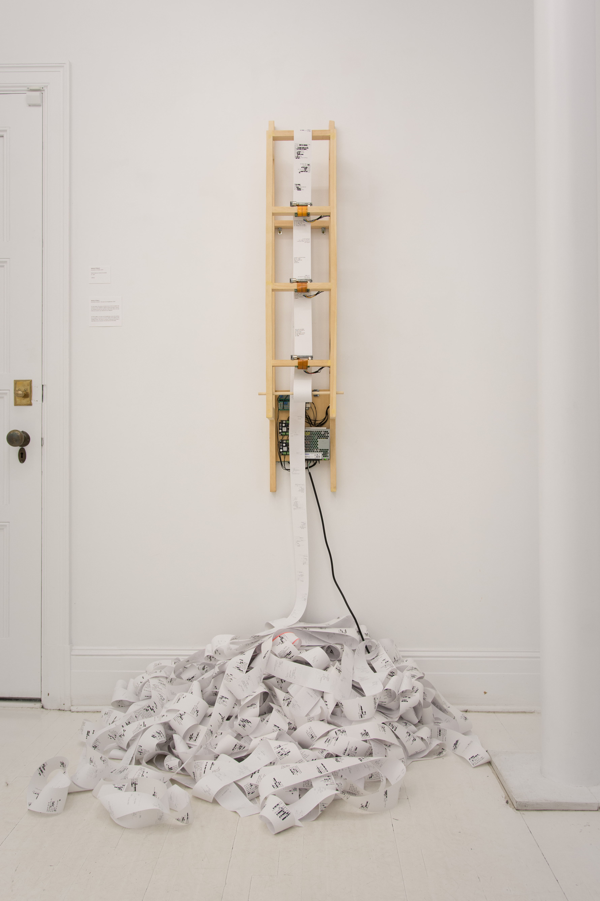

PORTFOLIO

Manual Slideshow with Navigation Arrows



Click the arrows to progress the slideshow
de pertes et d'oublis
En trois temps, « de pertes et d’oublis » met en récit la mutation des souvenirs et leur fragilité en regard au temps qui passe. L’oeuvre, en constante écriture (et réécriture) offre à lire des bribes de souvenirs vagues qui s’alternent puis s’effacent.
oeuvre présentée au Livart à l'automne 2019 lors de l'exposition collective Réminiscence
électronique sur mesure et poésie
Pour l'intégrale des poèmes présentés c'est ici